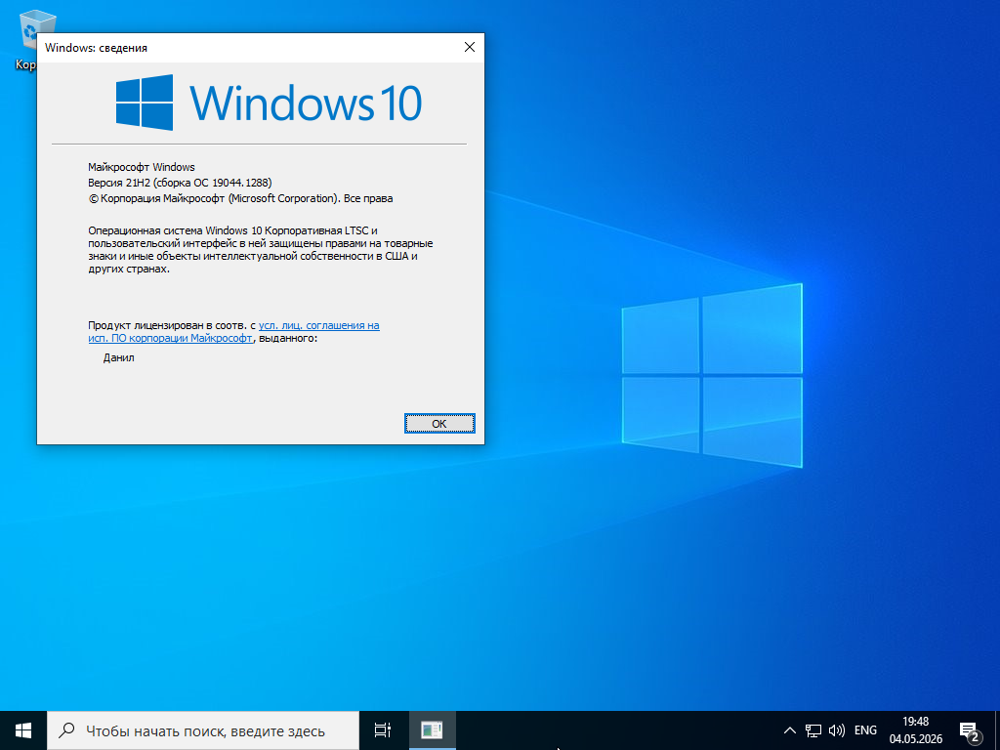
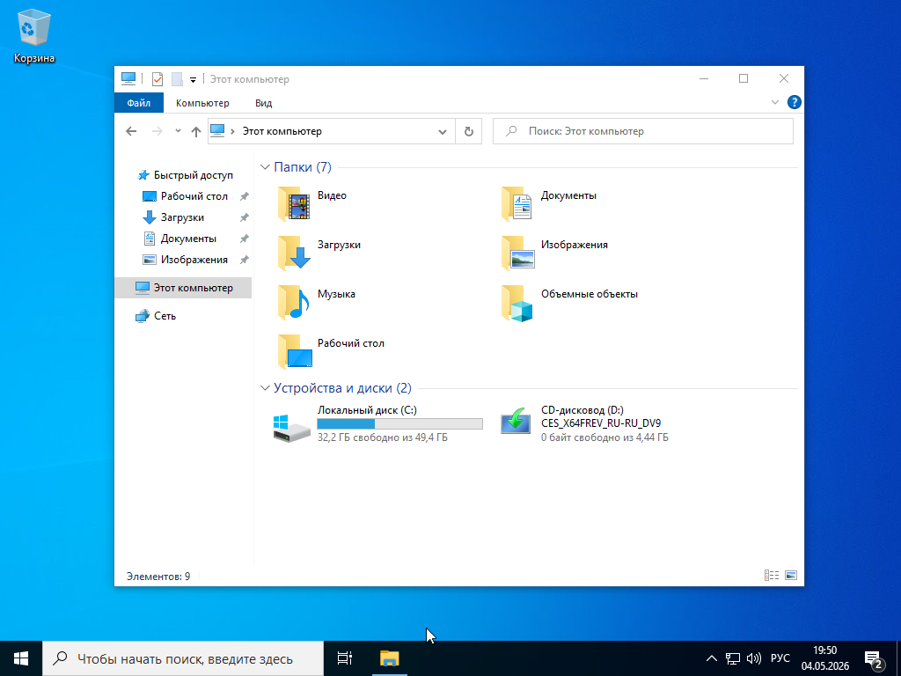
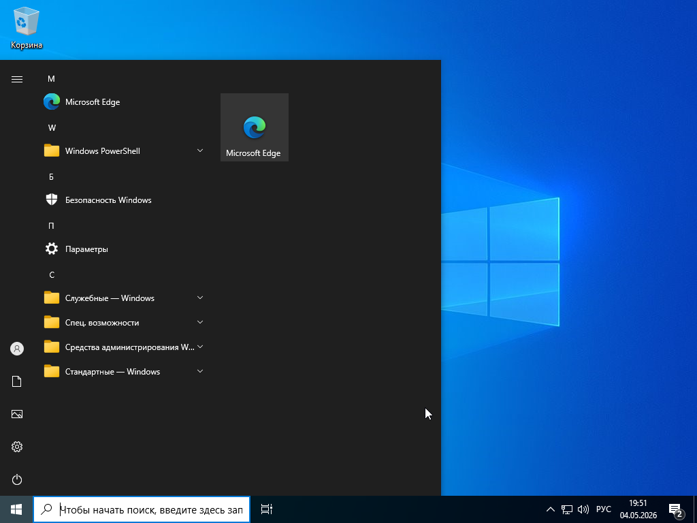
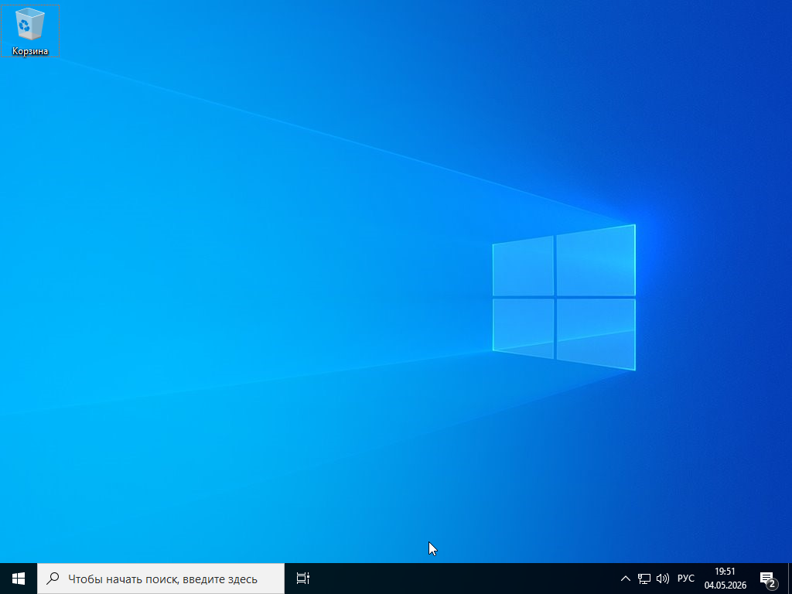

Главная
Изменения
О проекте
Проводник
💡 Совет: После скачивания проверьте контрольные суммы. Нажмите «Копировать» рядом с хешем.
Windows 10 IoT LTSC
Имя
Размер
Дата
SHA256
💿 windows 10 x64 IoT LTSC/
4,44 ГБ
04.05.2026
2FE16C42...
💿 Windows 10 IoT LTSC (x64) 21H2
(сборка 19044.1288)
📄 File: ru-ru_windows_10_enterprise_ltsc_2021_x64_dvd.iso
🔐 SHA256: 2FE16C42F155762FC5EEFCA5F0C357BF74306E54C1F712CC9DB6AA0F94EB9995
Копировать
💾 Size: 4.44 ГБ (4 664 164 000 байт)
🏷️ TAG: Версия: Windows 10 x64 IoT LTSC (сборка 19045.3808), русский оригинал
Скачать ISO
Как проверить хеш-сумму ISO
Скриншоты

winver

Проводник

Меню Пуск

Рабочий стол
×
❮
❯